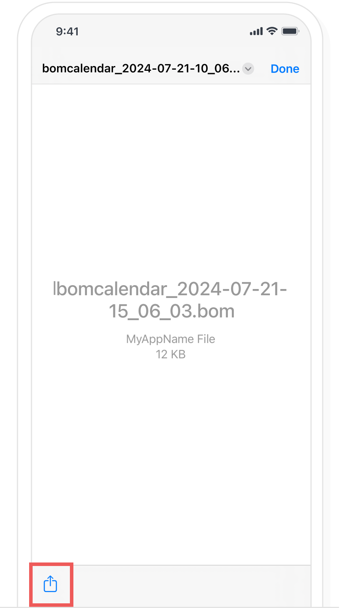
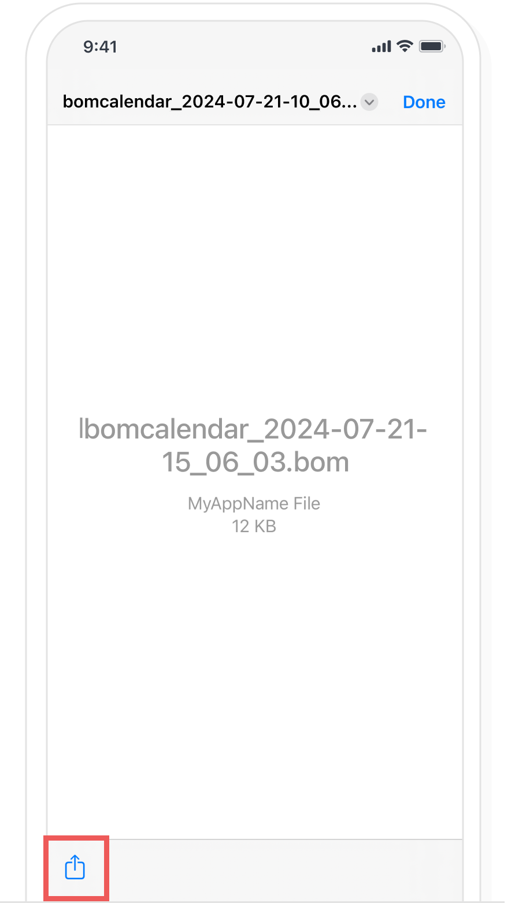

-
1
Back up
In the Bom Calendar Settings > ‘Personal/Security/Backup’, please select ‘Back up data’.

Please choose the application or the email to send out the back up.

Please check whether back up data is attached to the email if you want to back up to email. Once you enter the email address to be backed up to the recipient, select 'Send'. The back up data file is saved to incoming mail as the email is sent.

If you want to back up to Cloud, check whether the account to be saved is correct and select 'UPLOAD(Save)'. Once you select 'UPLOAD(Save)', the back up data file is saved to Cloud.

-
2
Restore
If you have backed up to email, select the email and then choose the attached back up data file.
 
Please select ‘Save to File’.
In the Bom Calendar Settings > ‘Personal/Security/Backup’, please select ‘Restore data’.
Please select the file to restore.
In the restore confirmation popup, select the ‘Yes, please restore’ button to complete the restoration.